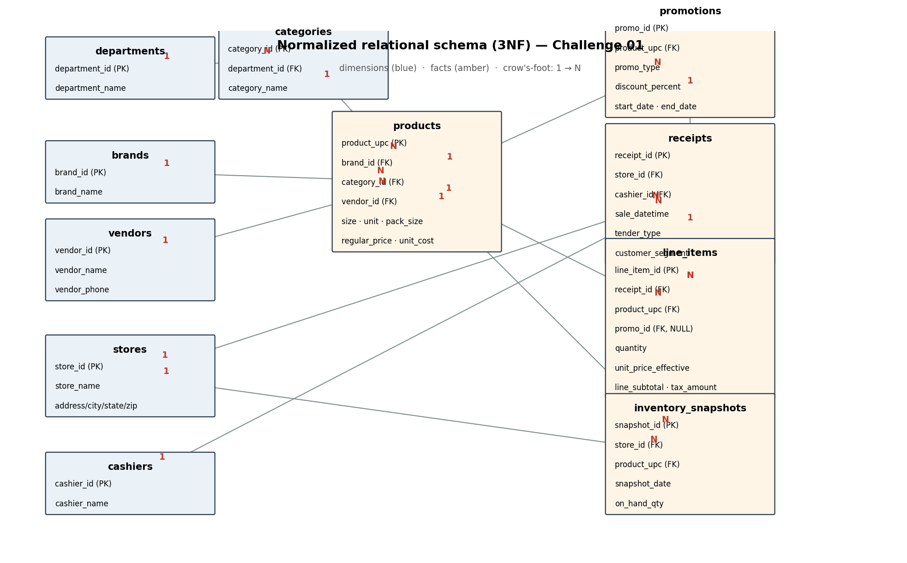
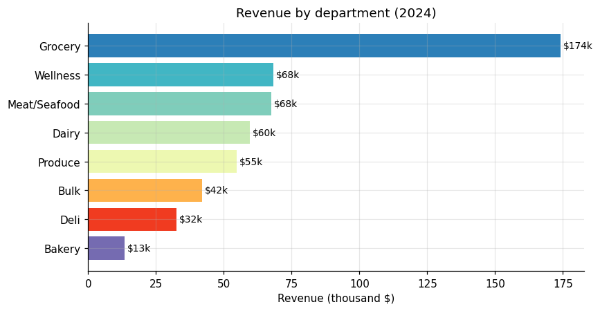
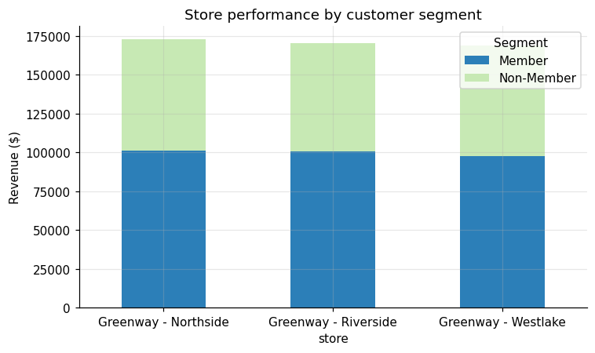
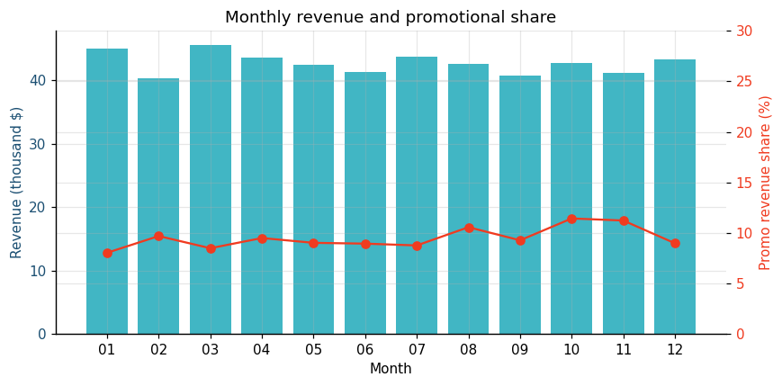
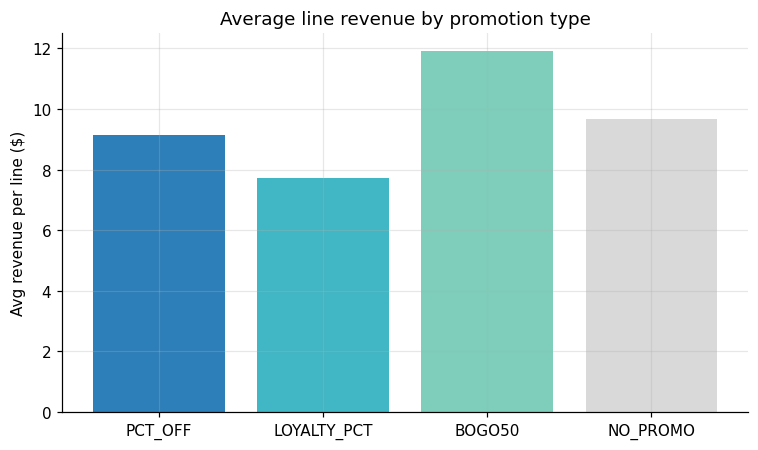
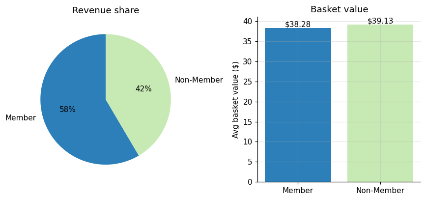
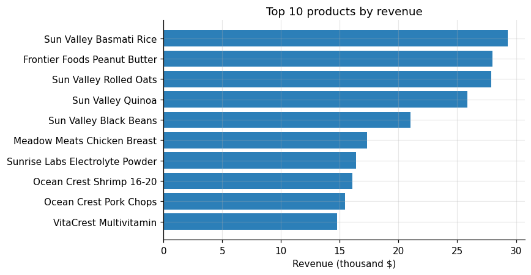
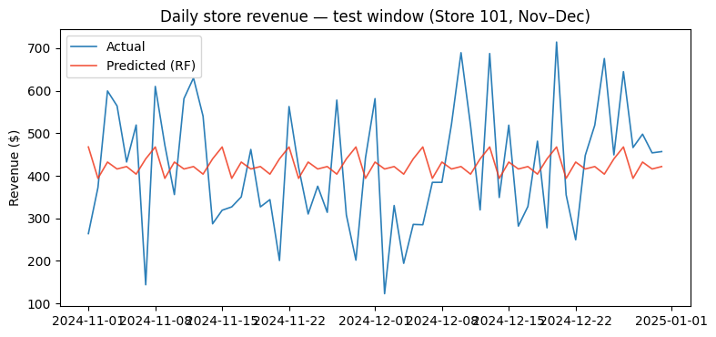

《杂货零售——数据驱动》系列：将分散的电子表格，转化为结构化、可查询、可复现的关系型数据底座，并验证其分析与建模就绪度。
四个平面文件经一套可复现的 ETL 脚本流入规范模式：
| 阶段 | 输入 | 处理 | 输出 |
|---|---|---|---|
| 接入 | products / promotions / inventory / sales×4 | 读取 4 种异构日期格式 | 统一 pandas 数据帧 |
| 清洗与类型强制 | — | 数值/日期强制、异常行标记 | 规范化 DataFrame |
| 建模 | — | 维度去重 + 代理键赋值 + 外键解析 | 11 张表 |
| 校验 | — | 主键/外键/CHECK 约束审计、计数日志 | REJECTED rows: 0 |
| 加载 | — | PostgreSQL（或 SQLite 回退） | challenge_01.sqlite |
行数对账（ETL 日志）：products=60 · promotions=530 · stores=3 · cashiers=8 · receipts=13,259 · line_items=53,286 · inventory_snapshots=2,160 —— 与 readme.txt 完全一致。
逆向工程识别出 7 张维度表与 4 张事实表；products 是汇聚散落属性的中枢，receipts（票头）与 line_items（票行）分离，去掉每行重复的 ~10 个描述列。

weekend_flag 与库存 unit_cost/value；④ 刻意折中——保留自然码主键用于可对账、票头枚举用 CHECK 而非过度拆表。完整理由见 architecture.md。





目标：按「门店 × 日」粒度预测营收。时间切分——训练 2024-01 至 10 月，测试 11–12 月（183 个门店-日，覆盖 100%）。
| 模型 | MAE ($) | RMSE ($) | MAPE (%) |
|---|---|---|---|
| persistence（昨日值） | 176.1 | 224.1 | 41.42 |
| weekday_naive（上周同 weekday） | 197.6 | 241.4 | 48.52 |
| random_forest（日历特征） | 135.8 | 170.6 | 33.05 |

假设与局限：仅用日历特征；日粒度噪声大（单店日均 ≈$156），故 MAPE 绝对水平偏高，聚合到周会显著下降；窗口仅一年，无法验证跨年季节性。RandomForest 比最优朴素基线提升 15.5 个百分点，dayofyear 为首要特征。
python scripts/load_data.py）即可从 7 个文件重建整个数据库，行数与源文件严格一致、0 异常行。reports/etl/rejected_rows.csv，为审计铺路。